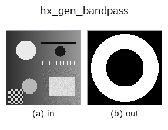

halcon_ext op• Data kinds: image → image
• Call: fullseye.apply(img, "hx_gen_bandpass", a=0.5, b=0.5) (the 2-D model is one image plus two scalar knobs a,b∈[0,1])
• HALCON equivalent: gen_bandpass (the HALCON reference is a useful guide to its meaning and parameters)

*The figure is the actual output on a synthetic 128×128 input. Left: input, right: output. Point clouds are drawn as a top-down scatter (brightness = z), 1-D series as a line plot, volumes as the maximum-intensity projection along z, videos as the middle frame, complex images as magnitude; return values that are not pictures are shown as the values themselves.*
Sweeping knob a (0.1 / 0.5 / 0.9, the other knob at its default):
▸ hx_gen_bandpass: knob a sweep (docs site)
Sweeping knob b (0.1 / 0.5 / 0.9, the other knob at its default):
▸ hx_gen_bandpass: knob b sweep (docs site)
On other images (synthetic scene / photo / coins. Top row: inputs, bottom row: their outputs. Knobs at default):
▸ hx_gen_bandpass: other inputs (docs site)
*The 4th column is a colour (H,W,3) input. This op handles colour without crossing channels (it does not convolve the colour channel as a third spatial axis).*
An ideal band-pass (an annular mask in the frequency domain, inner radius a and bandwidth b).
For the same normalised frequency radius r as hx_gen_lowpass (already fftshift-ed, centre = DC), returns a 0/1 float image (frequency-domain mask) with the annulus r_lo <= r <= r_hi set to 1. The input v is used only to obtain the shape.
• a → inner radius r_lo = 0.05 + 0.4*a (0.05 to 0.45).
• b → bandwidth r_hi - r_lo = 0.05 + 0.3*b (0.05 to 0.35). The outer radius is r_lo + width, at most 0.8, but since no frequency has a radius above
about 0.707, for large a, b the outside of the annulus falls outside the image and it effectively becomes a high-pass.
hx_gen_bandfilter is another parameterisation specifying the same annulus by "centre radius and half-width". Used as a pixel-wise product with centre = DC spectra such as fft_generic.
Value comparability (measured): the output is normalised by that image's own maximum (the output maximum is always 1.0, and scaling the input leaves the output unchanged). Values therefore cannot be compared across images — a feature of the same strength takes a different value depending on what the strongest feature in that image happens to be, and in an image holding only weak features the noise is lifted to 1.0. To compare across images, rescale by a common reference.
• gallery2d_halcon_ext family guide
• Sample-data catalog (download URLs / licences) — 2-D uses skimage.data (BSD/public domain) plus synthetic images; 3-D lists download URLs for real data sources (Stanford, PDS, …).
• Operator provenance and references — the sources of the research/methods this op family came from.
• The canonical algorithm (author, year) and its uses are named in the family usage guide above.
The program below has been verified to run (same input as the figure). In Studio's help this block becomes buttons that load and run it on the spot.
hx_gen_bandpass 0.50 0.50
▸ Load this pipeline · Load & run
• gallery2d_halcon_ext — py -3.11 examples/gallery2d_halcon_ext.py
image as input)identity · gaussian · mean_box · bilateral · unsharp · median · min_filter · max_filter
halcon_ext)hx_gen_circle · hx_gen_ellipse · hx_gen_rectangle2 · hx_gen_checker_region · hx_gen_grid_region · hx_gabor · hx_fit_surface1 · hx_fit_surface2
*Provenance: ops.py — 2D operator registry. This per-op note is generated by tools/opdocs.py md (do not hand-edit).*
© 2026 Kazufumi Furuse — Fullseye operator documentation. Licensed under Apache-2.0.